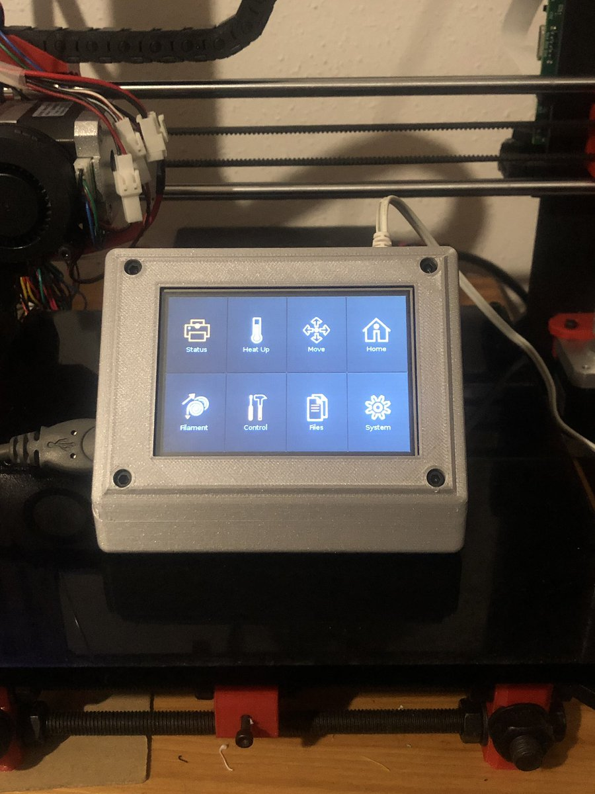
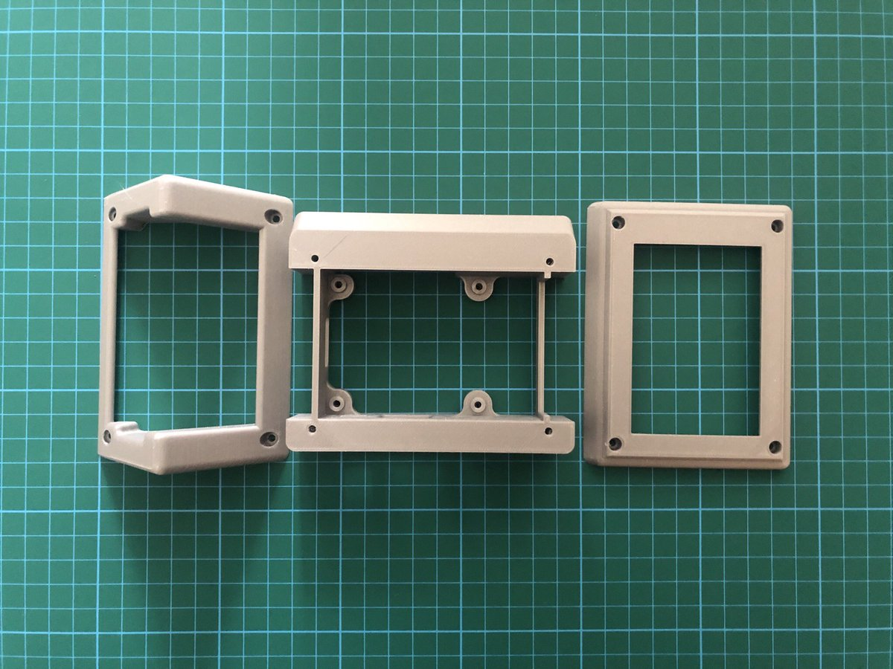

Instalacion de Octoprint-TFT
Octoprint-TFT es una interfaz táctil OctoPrint para módulos táctiles TFT basados en GTK + 3 que nos sirve para controlar nuestra impresora 3D.
Voy a explicar los pasos que he seguido para instalar Octoprint-TFT en una raspberry pi 2 y una pantalla tft de 3.5". Partiendo del punto en el que ya tenemos instalado octoprint, con el SSH activado.

1) Instalación de drivers de la pantalla desde SSH:
Para que la pantalla funcione en la Rpi con nuestro octoprint, debemos conectarnos vía ssh a través del terminal de nuestro ordenador e introducir los siguientes comandos.
wget https://www.waveshare.com/w/upload/1/1e/LCD-show-180817.tar.gz
tar xvf LCD-show-180817.tar.gz
cd LCD-show/
chmod +x LCD35-show
./LCD35-show
La Rpi se reiniciara y nos aparecerá la consola por la pantalla.
2) Instalacion de Octoprint-TFT
sudo apt-get update
sudo apt-get install xserver-xorg xinit libgtk-3-0 xserver-xorg-video-fbdev
wget https://github.com/mcuadros/OctoPrint-TFT/releases/download/v0.1.2/octoprint-tft_0.1.2-1.stretch_armhf.deb
sudo dpkg -i octoprint-tft_0.1.2-1.stretch_armhf.deb
sudo mv /usr/share/X11/xorg.conf.d/99-fbturbo.conf ~
sudo nano /lib/systemd/system/octoprint-tft.service
Cambiamos el valor 0 a 1 en esta linea:
ExecStart=/usr/bin/xinit /usr/bin/OctoPrint-TFT -- :0 -nolisten tcp -nocursor
a
ExecStart=/usr/bin/xinit /usr/bin/OctoPrint-TFT -- :1 -nolisten tcp -nocursor
Grabamos el archivo, pulsando CTRL+X y confirmamos tecleando Y, para guardarlo.
Ya tendremos lista nuestra pantalla TFT con control táctil.
Fuente: https://github.com/mcuadros/OctoPrint-TFT

En mi caso he usado esta carcasa impresa en 3d "Pi TFT plus Console Case" lo que hace que por la posición de la Rpi se me vea invertida la imagen. Solución: Rotar la imagén.
Rotar pantalla Raspberry Pi
sudo nano /boot/config.txt
poner como última línea
display_rotate=2
sudo nano /usr/share/X11/xorg.conf.d/99-callibration.conf
y añadir estas dos líneas
Option “InvertX” “true”
Option “InvertY” “true”